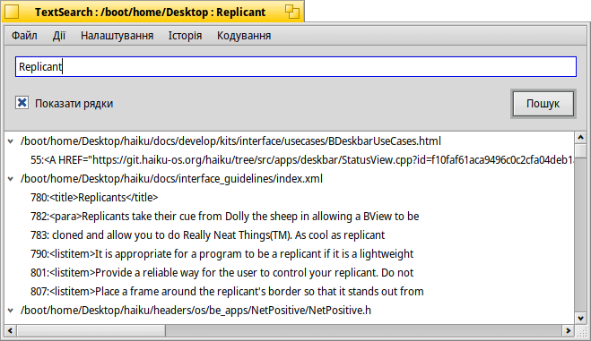

TextSearch (Пошук тексту)
| Deskbar: | У меню не входить, запускається як доповнення Tracker | |
| Розташування: | /boot/system/apps/TextSearch | |
| Налаштування: | ~/config/settings/TextSearch |
TextSearch шукає рядок тексту у текстових файлах. Зазвичай він викликається з контекстного меню Доповнення файлового менеджера Tracker під час вибору файлів або папок, у яких потрібно виконати пошук.
Ви вводите текст, який треба знайти, у текстовому полі зверху і натискаєте клавішу Enter або кнопку , щоб почати пошук. Якщо опція увімкнена, результати пошуку автоматично розгортаються, щоб показати знайдений текст разом з рядками у файлах.
Лише кілька слів про деякі з пунктів меню, інші не потребують пояснень:
Меню | ||||
| ALT N | Відкриває нове вікно програми, де Ви можете ввести інший текст пошукового запиту і повторити пошук у вже вибраних Вами, тих самих файлах/папках. | |||
| ALT F | Відкриває діалог для вибору файлів або папок, у яких потрібно виконати пошук. Крім того, Ви можете перетягнути файли/папки у вікно програми. | |||
Меню | ||||
| ALT T | Видаляє зі списку всі записи, які наразі не вибрано. | |||
| ALT O | Відкриває вибрані у вікні результатів пошуку файли в асоційованій програмі (те саме, що і подвійний клік миші). Якщо це текстовий редактор і він підтримує цю функцію (наприклад, Pe), Ви можете перейти до того рядка, в якому було знайдено текст пошукового запиту. | |||
| ALT K | Відкриває папки з вибраними у вікні результатів пошуку файлами у файловому менеджері Tracker. | |||
| ALT B | Робить копію поточного виділення у буфері обміну. | |||
Меню | ||||
| Це корисно при роботі у середовищі «unixy», де часто адміністративні файли приховані всередині «.folders/». Системи контролю версій вихідних кодів, такі як SVN та CVS, є прикладами програм, що використовують цю можливість а також широко застосовуються у Haiku. | ||||
| TextSearch використовує інструмент командного рядка grep. Для його роботи необхідно, щоб спеціальні символи, такі як '"*\$?! та пробіл, були екрановані символом \. Активація цього параметра означає, що Вам доведеться робити це самостійно, але натомість Ви отримаєте можливість використовувати регулярні вирази. | ||||
| Пошук тексту здійснюється лише у звичайних текстових файлах. Якщо вимкнути цей параметр, програма шукатиме у файлах будь-якого типу. | ||||
| Дозволяє відкривати файли у вибраному редакторі коду (який обробляє сигнатуру text/x-source-code). Інакше файл буде відкритий у асоційованій для цього типу файлу програмі. Корисно, наприклад, при редагуванні HTML-файлів, які зазвичай відкриваються у браузері. | ||||
Меню | ||||
| Містить нещодавно використані рядки пошукових запитів. | ||||
Меню | ||||
| Дозволяє вибирати різні кодування символів, при необхідності. | ||||